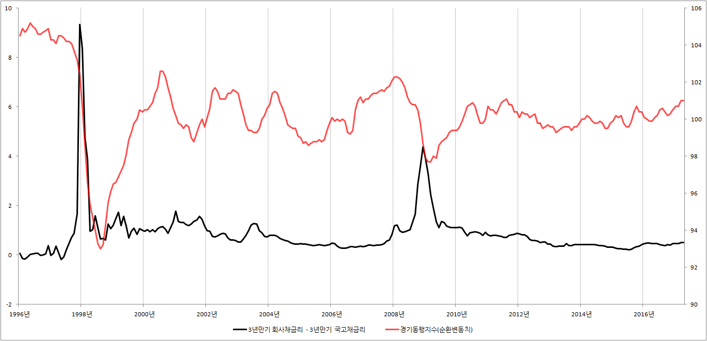

■ 신용스프레드란?
1. 스프레드
스프레드(spread)가 경제 용어로 사용되면 '차이' 또는 '차액'을 의미합니다. 예를 들어 장단기금리 스프레드는 장기금리에서 단기금리를 뺀것입니다.
장단기금리 스프레드 = 장기금리 - 단기금리
만약 10년 동안 돈을 빌릴 때의 금리가 연 5%이고, 1년 동안 돈을 빌릴 때의 금리가 연 3%라면 장단기금리 스프레드는 2%포인트가 됩니다.
2.신용 스프레드
신용 스프레드란 신용위험, 쉽게 말해서 돈을 떼어 먹힐 위험에 따른 금리 차이를 말합니다.
예를 들어 홍길동한테 돈을 빌려준다고 합시다. 길동이는 주거지도 불분명하고, 직업도 좀 위험합니다. 따라서 길동이에게 돈을 빌려줄 때는 10%의 금리를 받고 돈을 빌려줍니다.
하지만 이몽룡은 다릅니다. 몽룡이는 공무원입니다. 게다가 조선 최고의 끗발을 자랑하는 암행어사입니다. 따라서 돈을 떼어먹힐 위험이 거의 없는 관계로 3%의 금리만 받고 돈을 빌려줍니다.
그렇다면 길동이와 몽룡이의 신용 스프레드는 얼마가 될까요? 답은 간단합니다. 10% - 3% = 7%포인트가 됩니다.
하지만 경제신문이나 TV뉴스에서 말하는 신용 스프레드는 길동이와 몽룡이의 금리 차이를 말하는 것이 아닙니다. 뉴스에서 말하는 신용스프레드는 회사채금리에서 국고채금리를 뺀 것입니다.
예를 들어 3년만기 회사채금리가 10%, 3년만기 국고채금리가 3%라고 합시다. 그러면 신용스프레드는 7%포인트가 됩니다.
신용 스프레드 = 10% - 3% = 7%포인트
3.신용 스프레드의 의의
신용 스프레드는 경기전망을 하거나 주가전망 등을 할 때 아주 약발이 좋은 것으로 알려져 있습니다. 따라서 경제의 미래나 주가의 미래에 대해 관심이 있다면 꼭 체크해 봐야 할 것이 신용 스프레드입니다.
■ 신용 스프레드와 경기동행지수(순환변동치)

{kind=link}
■ 신용 스프레드와 코스피

4.관련 통계 자료를 찾을 수 있는 사이트
■ 국고채 금리 : 한국은행 경제통계시스템 → 4.금리 → 4.1 시장금리 → 4.1.1 국고채
■ 회사채 금리 : 한국은행 경제통계시스템 → 4.금리 → 4.1 시장금리 → 4.1.1 회사채
■ 경기동행지수 : 한국은행 경제통계시스템 → 15.산업 및 고용 → 15.1.산업일반 → 15.10.4.경기종합지수 → 경기동행지수
■ 코스피 : 한국은행 경제통계시스템 → 6.증권/재정 → 6.2.주식거래 및 주가지수 → 6.2.2 주식거래 및 주가지수 → KOSPI 계열 → KOSPI_종가, 평균
※ 함께 읽으면 제대로 영양가 있는 글 : 신용스프레드를 이용한 경제 전망과 주가 전망